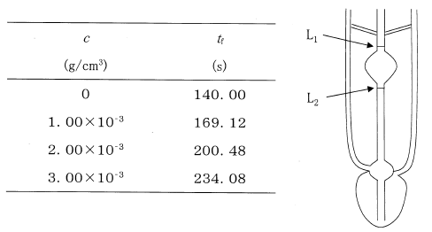
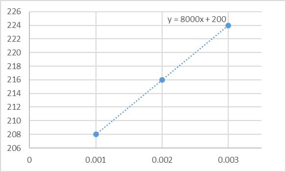

令和5年度 問29 化学プロセス
高分子の固有粘度［η］は、希薄溶液の濃度依存性の測定値から、次式を用いて求めることができる。
$$ \left[\eta\right]=\lim_{c\rightarrow 0}\left(\eta/\eta_{s}-1\right)/c$$
ここで、c：濃度（g/cm3）、η：高分子溶液の粘度、ηs：溶媒の粘度
古典的には図のような毛細管粘度計を用いて、異なる濃度cでの高分子溶液の表面が点L1からL2までに落ちる流下時間tfをそれぞれ測定することによって求めることができる。この際、tfは溶液粘度ηに比例することになる。ある高分子希薄溶液について、この粘度測定を行い、下のような結果が得られた場合、固有粘度として最も近い値はどれか。

高分子を溶媒に溶かすと、分子量の大きい高分子を用いるほど溶液の粘度が高くなります。一般にポリマーの分子量に依存するため、この特性を生かし、固有粘度（極限粘度）から分子量を計算できます。これをMark-Houwink-Sakuradaの式と呼びます。
Mark-Houwink-Sakuradaの式
$$ \left[ \eta \right] = KM^{\alpha}$$
［η］：固有粘度、M：分子量、K, α：高分子と溶媒で決まる定数
ポリマーの分子量を計算するために問題の方法（粘度法）を用いて固有粘度を調べます。測定結果を横軸にc、縦軸に(η/ηs−1)/c の形でプロットし、直線がc=0の時の(η/ηs−1)/c の値が固有粘度［η］です。
ポリマーが溶解されていないとき（c=0のとき）、高分子溶液の粘度ηは溶媒の粘度ηsと一致します。そのため2つの粘度の比率η/ηsは1となります。
問題文中に流下時間tfは溶液粘度ηに比例すると記載されています。また溶媒は1種類で一定なため、ポリマーが増加したことによるη/ηsの変化率はtfの変化率と一致します。これら内容を踏まえ、縦軸の値となる(η/ηs−1)/c を求めます。
| 濃度 c ［g/cm3］ | 流下時間 tf［s］ | 粘度の比率 η/ηs［-］ | (η/ηs−1)/c［cm3/g］ |
|---|---|---|---|
| 0 | 140.00 | 1 | ゼロ割りのため計算不可 |
| 1.00×10-3 | 169.12 | 1.208 | 208 |
| 2.00×10-3 | 200.48 | 1.432 | 216 |
| 3.00×10-3 | 234.08 | 1.672 | 224 |
横軸にc、縦軸に(η/ηs−1)/c でプロットしたグラフを以下に示します。

近似直線はy=8000x+200です。x=0、つまり濃度c=0のときの(η/ηs−1)/cが固有粘度［η］であるため、値は200となります。